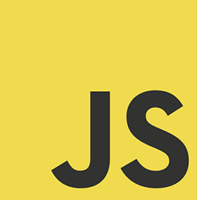

class: front-page  # Fremtidens JavaScript: ES6 Kent Andersen Erik Wendel <p class="today-date"></p> --- exclude: false class: middle center .card[ .picture[  ] .name[Kent Andersen] .title[Frontend-utvikler] .department[Interactive] .phone[952 90 948] .email[kent.andersen@bekk.no] ] .card[ .picture[  ] .name[Erik Wendel] .title[Fagleder Webteknologier] .department[Technology] .phone[416 97 226] .email[erik.wendel@bekk.no] ] --- class: middle center ## ES6?! --- class: middle center  --- class: middle center  --- class: middle center  --- class: middle center  ??? I år 199x skjedde det noe: IE5 ble sluppet. Og med det hadde de praktisk talt 100% av browsermarkedet. Derfor mistet de alt insentiv til å videreutvikle standarden. --- class: middle center # 2009 ECMAScript 5: ``` Array.prototype.map Array.prototype.filter Array.prototype.reduce Function.prototype.bind Object.create ``` --- class: middle center  --- class: middle center # Variabler --- # Let ``` var x = true; let y = true; x // true y // true ``` ??? Funker nesten likt som var -- ``` if (true) { var x = true; } x // true if (true) { let y = true; } y // ReferenceError: y is not defined ``` ??? Men er block-scoped, ikke function-scoped --- # Let ``` { let x = true; } x // ReferenceError: x is not defined ``` ??? Kan brukes i fake scopes { ... } --- # Let ``` function addListeners() { var listElements = $('li'); var l = listElements.length; for (var i = 0 ; i < l ; i++) { // A listElements[i].addEventListener('click', function (e) { console.log(listElements[i].innerHTML); // B }); } } ``` --- class: middle center  --- # Let ``` function addListeners() { var listElements = $('li'); var l = listElements.length; for (let i = 0 ; i < l ; i++) { // A listElements[i].addEventListener('click', function (e) { console.log(listElements[i].innerHTML); // B }); } } ``` --- # Const ``` if (true) { const x = true; } x // ReferenceError: x is not defined ``` ??? Også block-scoped -- ``` const x = 'I am a const'; x = 'Cant change you?'; // SyntaxError: 'constString' is read-only ``` ??? konstanter, kan ikke endres -- ``` const arr = [1, 2]; arr[0] = 0; arr[0] // 0 ``` ??? Men du kan fortsatt endre innholdet Åpenbar verdi med let & const: kommuniserer til andre som leser koden hva som er meningen med en variabel --- class: middle center # Template strings --- # Template strings ``` const name = 'Kjell'; const age = 36; const greeting = 'Hello, mister ' + name.toUpperCase() + '! You are ' + age + ' years old. ``` --- # Template strings ``` const name = 'Kjell'; const age = 36; const greeting = `Hello, mister ${name.toUpperCase()}! You are ${age} years old. ``` --- class: middle center # Default params --- # Default params ``` function hello(name) { return `Hello ${name}!`; } ``` -- ``` function hello(name) { name = name || 'world'; return `Hello ${name}!`; } ``` -- ``` function hello(name) { return `Hello ${name || 'world'}!`; } ``` -- ``` function hello(name = 'world') { return `Hello ${name}!`; } ``` --- # Default params ``` function importantFunction(required = throwError()) { } ``` --- class: middle center # Arrow functions --- # Arrow functions ``` [1,2,3].map(function(n) { return n * 2; }); ``` -- ``` [1,2,3].map(n => n * 2); ``` --- # Arrow functions ``` [1,2,3].reduce(function(sum, value) { return sum + value; }); ``` -- ``` [1,2,3].reduce((sum, value) => sum + value); ``` --- # Arrow functions ``` [1,2,3].map(() => 1); ``` --- # Arrow functions et parameter ``` a => a() ``` flere parameter ``` (a,b) => a+b ``` ingen parameter ``` () => a(); ``` ??? Siste resultat er automatisk returnert --- # Multiline arrow functions ``` // et parameter let myFunc = a => { let b = a(); return b; } ``` ``` // flere parameter let myFunc = (a,b) => { let c = a+b; return b; } ``` ``` // ingen parameter let myFunc = () => { let b = a(); return b; } ``` ??? Må manuellt returnere --- #Arrow functions ``` var that = this; setTimeout(function() { that.doSomething(); that.value = 4; }, 1000); ``` -- ``` setTimeout(() => { this.doSomething(); this.value = 4; }, 1000); ``` ??? Context inne i en arrow function er det samme som der den blir deklarert --- class: middle center # Destructuring --- # Assigning fra array ``` let arr = [1, 2, 3, 4, 5]; let [first, second] = arr; first // 1 second // 2 ``` ??? gjør det penere å assigne verdier -- ``` let arr = [1, 2, 3, 4, 5] let [first,, third] = arr; first // 1 third // 3 ``` ??? kan enkelt hoppe over verdier -- ``` let arr = [[1, 2], 3, 4, 5] let [[first, second], third] = arr; first // 1 second // 2 third // 3 ``` ??? eller hente ut fra nøstede arrary --- #Assigning av objekter ``` let obj = {a:'a', b:'b', c:'c', d:'d', e:'e'}; let {a, b} = obj; a // 'a' b // 'b' ``` -- Assigne med renaming ``` let obj = {a:'a', b:'b', c:'c', d:'d', e:'e'}; let {a:nyttNavn, b:endaNyttNavn} = obj; nyttNavn // 'a' endaNyttNavn // 'b' ``` --- # Assigning med defaults ## Arrays ``` let [a=1] = []; a // 1 ``` -- ## Objekter ``` let {a=1} = {b:'ball'} a // 1 ``` -- ``` let {a:alder=1} = {b:'ball'} alder // 1 ``` ??? med renaming og defaults --- #Assigning av objekter fra variabler ``` let a = 1; let b = 2; let c = 3; let obj = {a,b,c}; obj // {a:1, b:2, c:3} ``` --- # Rest operator ``` let arr = [1, 2, 3, 4, 5]; let [first, second, ...rest] = arr; first // 1 second // 2 rest // [3, 4, 5] ``` ??? Hente ut resten fra et array -- ``` let arr = [1, 2, 3, 4, 5]; let [first,, ...rest, fifth] // Syntax Error: Unexpected token ``` ??? Men rest operator må alltid være til slutt --- # spread operator ``` new Date(2011, 3, 1, 9, 0, 0); // Fri Apr 01 2011 09:00:00 GMT+0200 new Date(...[2011, 3, 1, 9, 0]); // Fri Apr 01 2011 09:00:00 GMT+0200 ``` ??? må ikke forveksles med rest operator oversetter et array til argumenter -- ``` [a, b] = [...[0, 1, 2, 3, 4, 5]]; a // 0 b // 1 ``` ??? litt søkt eksempel -- ``` let arr = [true, false]; myFunction(...arr); ``` ??? mer passende hvis argumentene er en variabel -- ``` myFunction.apply(this, arr); ``` ??? lettere mental map --- exclude: true class: cols two #Oppgaver .col[ ## Block scope * [let declaration](http://tddbin.com/#?kata=es6/language/block-scoping/let) * [const declaration](http://tddbin.com/#?kata=es6/language/block-scoping/const) ## Destructuring * [array](http://tddbin.com/#?kata=es6/language/destructuring/array) * [object](http://tddbin.com/#?kata=es6/language/destructuring/object) * [defaults](http://tddbin.com/#?kata=es6/language/destructuring/defaults) * [parameters](http://tddbin.com/#?kata=es6/language/destructuring/parameters) * [assign](http://tddbin.com/#?kata=es6/language/destructuring/rename) ] .col[ ## Rest operator * [som parameter](http://tddbin.com/#?kata=es6/language/rest/as-parameter) * [med destructuring](http://tddbin.com/#?kata=es6/language/rest/with-destructuring) ## Spread operator * [med arrays](http://tddbin.com/#?kata=es6/language/spread/with-arrays) ] --- class: middle center # Modules --- #Export ``` export const MY_CONSTANT = 7; export function multiply(x) { return x * MY_CONSTANT; } ``` -- ``` const MY_CONSTANT = 7; function multiply(x) { return x * MY_CONSTANT; } export { multiply, MY_CONSTANT }; ``` ??? AMD-style export -- ``` export { multiply as mult, MY_CONSTANT as SOME_CONSTANT }; ``` ??? Rename under export --- #Import ``` import calc from 'lib/calc'; ``` ??? import-key er relativ bane til filen du importerer Henter inn default for en fil, hvis ingen default er definert returnerers et objekt med flere medtoder -- ``` import { multiply, MY_CONSTANT } from 'lib/calc'; ``` ??? import en av medlemmene i fra en samme fil. husk på { ... } -- ``` import { multiply as mult } from 'lib/calc'; ``` ??? rename under import Note: på sikt kan åpner for bedre verktøy-støtte. Feks editorer kan med sikkerhet finne ut hvor en variabel / funksjon er deklarert --- #Default i moduler ``` export default function(x) { return x * MY_CONSTANT; } ``` -- ``` import Multiply from 'lib/calc'; // legg merke til at Multiply ikke er wrappet i {} import {default as Multiply} from 'lib/calc'; // Disse to gjør akkurat det samme ``` --- class: middle center # Promise --- exclude: true class: middle <blockquote style='font-size: 2em'> The Promise object is used for deferred and asynchronous computations. A Promise represents an operation that hasn't completed yet, but is expected in the future. </blockquote> .source[https://developer.mozilla.org/en-US/docs/Web/JavaScript/Reference/Global_Objects/Promise] --- # Promise ``` noeAsync(() => { // Gjør noe gøy }); ``` ??? klassisk metode med callback -- ``` noeAsync(() => { noeAnnetAsync(() => { noeTredjeAsync(() => { noeFjerdeAsync(() => { // Gjør noe gøy }); }); }) }) ``` ??? Kan fort bli stygt med callback i parallel --- # Promise ``` noeAsync().then(() => { // alt gikk bra }).catch(() => { // noe gikk feil }); ``` -- ``` noeAsync().then(() =>{ // alt gikk bra }, () =>{ // noe gikk feil }); ``` ??? Ikke anbefalt syntax, hvis noe feiler i den første funksjonen vil ikke den andre bli kalt -- ``` noeAsync() .then(noeAnnetAsync) .then(noeTredjeAsync) .then(noeFjerdeAsync) .catch(taIMotFeilen); ``` --- # Promise ## Ufullstendig liste over custom implentasjoner * [jQuery deferred.promise](https://api.jquery.com/deferred.promise/) * [then/promise](https://github.com/then/promise/blob/master/src/core.js) * [kriskowal/q](https://github.com/kriskowal/q/blob/v1/design/README.js) * [petkaantonov/bluebird](https://github.com/petkaantonov/bluebird) ??? Alle implementerer samme konseptet, men har forskjellig funksjonalitet og api --- # Promise ``` new Promise((resolve, reject) => { // Gjør noe spennende. // kall resolve hvis alt gikk bra // kall rejecte hvis noe feilet }); ``` --- # Promise ``` function hentTall() { return new Promise(function(resolve, reject) { setTimeout(() => { var tall = Math.random() tall > 0.5 ? resolve(tall) : reject(tall); }, 1000); }); } ``` Hent et tilfelldig tall om 1. sekund, reject om det er under 0,5 -- ``` hentTall().then(tall => { // over 0.5 }).cache(tall => { // under 0.5 }); ``` --- # Promise ``` new Promise((resolve, reject) => { setTimeout(resolve, 2000); }) .then( () => {throw 'up'}, error => console.log('then', error) ) .catch( error => console.log('catch', error) ); ``` -- ``` // catch up ``` --- # Promise ``` new Promise((resolve, reject) => { setTimeout(resolve, 2000); }) .then( () => {throw 'up'}, error => console.log('then', error) ) .catch( error => { console.log('catch', error); throw 'again???'; } ); ``` -- ``` // catch up ``` --- # Promise ``` var jsonPromise = new Promise((resolve, reject) => { $.getJSON('some/endpoint').then(resolve, reject); }); ``` ??? konverter jquery deferred (eller andre implementasjoner) til es6 promises --- class: middle center # Class --- # Class ``` class User { constructor(id) { } someFunction() { // function body } } ``` ??? Ikke ordentlig klasser, bare syntax-sukker oppå prototype -- ``` var User = function(id) {} User.prototype.someFunction() { // function body }; ``` ??? Dette er akkurat det samme -- ``` let user = new User(12); ``` ??? fortsatt samme syntax for å instansiere --- # Class ``` var myFunctionName = 'nameOfFunction' class User { constructor(id) {} someFunction() { // function body } [myFunctionName]() { // function body } } ``` ??? dynamiske funnskjonsnavn --- # Class ``` class User { constructor(id) {} get age() { return this.age } set age(age) { this.age = age } } ``` ??? getter og setter metode for properties --- # Class ``` class User {} class SuperUser extends User {} ``` -- ``` class User { constructor() {} someFunction() {} } class SuperUser extends User { constructor() { super(); } someFunction() { super.someFunction(); } } ``` ??? super metoder --- exclude: true class: cols two #Oppgaver ## Import / Export * [import uttrykk](http://tddbin.com/#?kata=es6/language/modules/import) ## Arrow functions * [deklarasjon](http://tddbin.com/#?kata=es6/language/arrow-functions/basics) <!-- * [funksjons binding](http://tddbin.com/#?kata=es6/language/arrow-functions/binding) ## Promise * TODO: trenger noen oppgaver --> ## Class * [creation](http://tddbin.com/#?kata=es6/language/class/creation) * [getter og setter](http://tddbin.com/#?kata=es6/language/class/accessors) * [extends](http://tddbin.com/#?kata=es6/language/class/extends) * [mer extends](http://tddbin.com/#?kata=es6/language/class/more-extends) * [super i metoder](http://tddbin.com/#?kata=es6/language/class/super-in-method) * [super i constructor](http://tddbin.com/#?kata=es6/language/class/super-in-constructor) --- exclude: true class: center middle # Map ??? ES6 har noen nye objekttype Skal gjøre det lettere for kompilatoren å optimalisere koden --- exclude: true # Map ``` let m = new Map(); ``` ??? Fungerer på mange måter som et object Alle key er unike -- exclude: true ``` let m = new Map([ ['key1', 'value1'], ['key2', 'value2'], ['key3', 'value3'] ]); ``` -- exclude: true ``` m.size // 3 ``` ??? Istede for length har du et size parameter --- exclude: true # Map ``` m.set('key', 'value'); ``` -- exclude: true ``` m.get('key'); // 'value' m.key // undefined ``` ??? Har getter / setter ikke dot-notasjon -- exclude: true ``` m.set('key2', {otherKey: 'value'}) m.key2.otherValue // Cannot read property 'otherValue' of undefined ``` -- exclude: true ``` m.get('key').otherValye // 'value' ``` ??? Begrenset støtte for nøsting --- exclude: true # Map ``` let obj = {}; let m = new Map(); m.set(obj, 'some value'); ``` -- exclude: true ``` m.get(obj); // 'some value' ``` -- exclude: true ``` let arr = []; m.set(arr, 'some value2'); m.get(arr); // 'some value2' ``` ??? Alt kan være en key -- exclude: true ``` m.set([], 'some value2'); m.get([]); // undefined ``` ??? Må være en gyldig peker eller en primitiv --- exclude: true # Map ``` let m = new Map(); m.set('key', 'value1'); m.set('key', 'value2'); m.set('key', 'value3'); m.get('key'); // value3 ``` -- exclude: true ??? Map er også unikt --- exclude: true # Map ``` let m = new Map([ ['key', 'value'] ]); m.delete('key'); m.get('key'); // undefined ``` -- exclude: true ``` m.forEach(function(value, key, map) { // function body }, this); ``` ??? ## Fordeler med Map fremfor Object * Object har en prototype, som gjør at det alltid finnes default keys i en map * Keys i en Object er stringer, mens Map kan være hva som helst * Har et size parameter for enkelt holde styr på størrelsen * Map kan ittereres over, og har alltid samme rekkefølge som elementene ble lagt inn i --- exclude: true class: center middle # Set --- exclude: true # Set ``` let s = new Set(); ``` -- exclude: true ``` let s = new Set([ 'value1', 'value2', 'value3' ]); ``` ??? ikke typed. Et Set kan inneholde verdier av forskjellig type --- exclude: true # Set ``` let s = new Set(); s.add('some value'); s.size; // 1 ``` ??? også her har vi et size parameter -- exclude: true ``` s.has('some value'); // true ``` -- exclude: true ``` s.add('some value'); s.add('some value'); s.size; // 1 ``` -- exclude: true ``` s.delete('some value'); ``` -- exclude: true ``` s.forEach(function(value, value, set) { // function body }, this); ``` ??? The are no keys in Set objects. However, the first two arguments are both values contained in the Set, so that the callback function is consistent with the forEach methods for Map and Array. --- exclude: true #Oppgaver ## Map * [Basics](http://tddbin.com/#?kata=es6/language/map/basics) * [map.get()](http://tddbin.com/#?kata=es6/language/map/get) * [map.set()](http://tddbin.com/#?kata=es6/language/map/set) * [initialize](http://tddbin.com/#?kata=es6/language/map/initialize) * [map.has()](http://tddbin.com/#?kata=es6/language/map/has) ## Set * [basics](http://tddbin.com/#?kata=es6/language/set/basics) * [set.add()](http://tddbin.com/#?kata=es6/language/set/add) * [set.delete()](http://tddbin.com/#?kata=es6/language/set/delete) * [the API](http://tddbin.com/#?kata=es6/language/set/api) * [set.clear()](http://tddbin.com/#?kata=es6/language/set/clear) --- class: middle center  .source[http://tech.finn.no/2015/06/25/browser-statistics-june-2015/] -- <div class="circle red" style="position:absolute; right: 3em; margin-top: -6em;">88%/12%</div> ??? 88% er på nyeste versjon --- class: middle center  ??? * mye rødt, selv fra de nyeste / beste nettleserene * legg merke til Safari, støtter nesten ingenting --- class: middle center  ??? * Polyfill gjør det mulig å bruke es6 i dag * kompelerer fra ES6 til ES5 --- class: fullscreen <iframe src="https://babeljs.io/repl/" style="width:100%; height:100%"> --- #Les mer * [Exploring ES6 av Axel Rauschmeyer](http://exploringjs.com/) * [JavaZone 2015: The close future of JavaScript av Christian Johansen](https://vimeo.com/138956041) * [ES6katas](http://es6katas.org) --- class: center middle bekk-top # TAKK! Kent Andersen & Erik Wendel